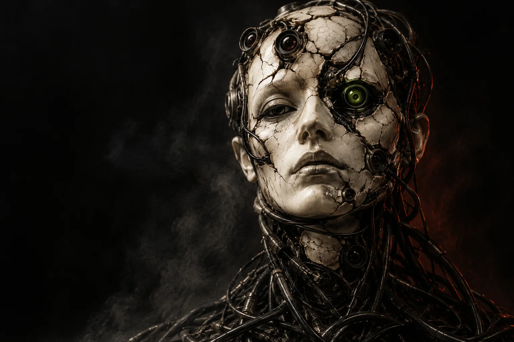
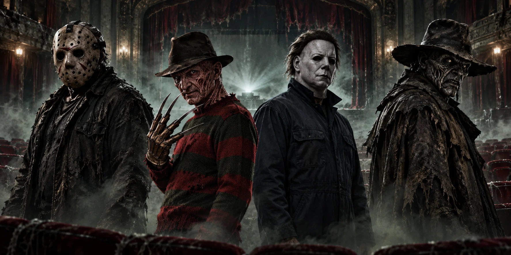

When being connected means being watched.

INDEPENDENT MIND. UNCOMFORTABLE ART.EST. 2026 / VOL. 001
DON GRAY / HORROR × TECHNOLOGY
BEAUTIFULLY
DISTURBING.
The things we fear.
The things we choose not to see.
01 / THE ARCHIVE
A CONCEPT COLLECTION / THREE UNEASY TRUTHSLOOK CLOSER.
IT GETS HUMAN.
Horror is the surface.
The story underneath is ours.
SELECT AN IMAGE TO OPEN THE CASE FILE ↗
Showing all 3 artworks.
A thousand versions of you. None of them whole.
The world doesn't end. It remembers.
CONCEPT STUDIES CREATED FOR THIS PORTFOLIO WITH GENERATIVE IMAGERY. NOT CLIENT COMMISSIONS OR PHOTOGRAPHS OF PHYSICAL WORK.
SPECIAL EXHIBITION / NIGHTMARE ICONS: REWIRED
RECOGNIZABLE MONSTERS. HUMAN-MADE HORRORS.THE MONSTERS
WE MAKE.
Four familiar nightmares.
Rebuilt from the world we live in.
What if the monster wasn’t waiting in the woods—but hiding in our habits? These fan-art reinterpretations dress iconic slashers in the anxieties of right now. Each card tells a fictional story inspired by its portrait.
TOUCH A PORTRAIT TO TURN IT OVER. THE REAL HORROR IS ON THE OTHER SIDE. ↙
FRIDAY THE 13TH
Dissect the design +
The black hockey mask is split by green-lit cables. Blank silhouette badges hang like trophies across his coat. The image connects hidden identity to a question: who answers for the damage when everyone can wear another face?
A NIGHTMARE ON ELM STREET
Dissect the design +
Broken clock faces form a halo behind his fedora. Ornate clock hands replace the familiar blades; circuitry runs through the red-and-black knit. Time and connection become physical pressures, turning the portrait into an image of exhaustion.
HALLOWEEN
Dissect the design +
A city glints inside one eye of the cracked white mask. Reflective panes overlap across the coveralls like armor, showing buildings but no human connection. The contrast between all that reflected life and the unreadable face gives the story its emotional distance.
JEEPERS CREEPERS
Dissect the design +
The wide-brimmed hat and heavy coat are patched with rusted panels, pale torn strips, and dark fragments. Green vines cross their surface; smoke fills the background. Decay and new growth coexist, making the environmental theme visible in the costume itself.
THESE ARE METAPHORS.
THE CONSEQUENCES ARE REAL.
THE CONSEQUENCES ARE REAL.
Fear can be entertainment.
It can also be a mirror.
View the original midnight screening ↘

UNOFFICIAL GENERATIVE FAN ART / CONCEPTUAL REINTERPRETATIONS FOR DON GRAY’S PORTFOLIO. SOURCE CHARACTERS BELONG TO THEIR RESPECTIVE RIGHTS HOLDERS. NO AFFILIATION OR ENDORSEMENT. SOCIAL THEMES ARE ARTISTIC INTERPRETATIONS, NOT CLAIMS ABOUT THE ORIGINAL FILMS.
02 / THE MIND BEHIND THE MONSTERS
I MAKE FEAR
MEAN SOMETHING.
I'm Don Gray. I'm drawn to the space where horror art meets technology—and where an unsettling image becomes a real conversation.
My interests connect graphic design, computer science, and engineering. I want to build images and experiences that go beyond shock: distorted identities, systems that watch us, and environments carrying the weight of human choices.
Slasher-inspired cuts. Uncanny forms. A little beautiful discomfort. The goal is always the same: make you look twice, then think longer.
01 / GRAPHIC DESIGN02 / COMPUTER SCIENCE03 / ENGINEERING
03 / THE INTERFERENCE LAB
YOU CONTROL THE DISTORTIONBREAK THE
PERFECT IMAGE.
Drag the controls. Strip away the polish. See how a familiar face becomes an unfamiliar feeling.
LIVE VISUAL STUDY / NO CAMERA OR MICROPHONE USED
SIGNAL ACTIVECORRUPTION: 035
SUBJECT DG—001
DO NOT LOOK AWAY.
DO NOT LOOK AWAY.
INTERACTIVE / VISUAL ONLYDG / LAB
04 / MAKE CONTACT
GOOD IDEAS DON'T HAVE TO BE COMFORTABLE.LET'S MAKE
SOMETHING HAUNT.
Have a concept, a collaboration, or a strange idea worth exploring? Start a conversation.